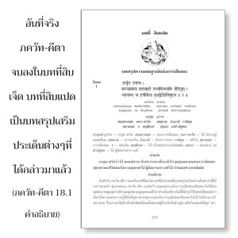

อรฺชุน ตรัสว่า โอ้ ยอดนักรบ ข้าปรารถนาที่จะเข้าใจจุดมุ่งหมายแห่งการเสียสละ ( ตฺยาค ) และชีวิตสละโลก ( สนฺนฺยาส ) โอ้ ผู้สังหารมาร เกศี โอ้ เจ้าแห่งประสาทสัมผัส

อันที่จริง ภควัท-คีตา จบลงในบทที่สิบเจ็ด บทที่สิบแปดเป็นบทสรุปเสริมประเด็นต่างๆที่ได้กล่าวมาแล้ว ทุกบทของ ภควัท-คีตา องค์ศฺรี กฺฤษฺณทรงเน้นการอุทิศตนเสียสละรับใช้ต่อบุคลิกภาพสูงสุดว่าเป็นจุดมุ่งหมายสูงสุดของชีวิต ประเด็นเดียวกันนี้ได้สรุปไว้ในบทที่สิบแปดว่าเป็นวิถีทางแห่งความรู้ที่ลับที่สุด หกบทแรกเน้นถึงการอุทิศตนเสียสละรับใช้ โยคินามฺ อปิ สเรฺวษามฺ “ในบรรดาโยคี หรือนักทิพย์นิยมทั้งหลายผู้ที่ระลึกถึงข้าอยู่ภายในใจเสมอดีที่สุด” หกบทต่อมาได้กล่าวถึงการอุทิศตนเสียสละรับใช้ที่บริสุทธิ์พร้อมทั้งธรรมชาติและกิจกรรม และหกบทสุดท้ายอธิบายถึงความรู้ การเสียสละ กิจกรรมของธรรมชาติวัตถุ ธรรมชาติทิพย์ และการอุทิศตนเสียสละรับใช้ สรุปได้ว่าการปฏิบัติทั้งหมดควรทำไปในความสัมพันธ์กับองค์ภควานฺที่มีคำว่า โอํ ตตฺ สตฺ เป็นผู้แทน ซึ่งแสดงถึงพระวิษฺณุ บุคลิกภาพสูงสุด ส่วนที่สามของ ภควัท-คีตา ได้แสดงว่าการอุทิศตนเสียสละรับใช้คือจุดมุ่งหมายสูงสุดของชีวิตมิใช่สิ่งอื่นใด ได้มีการสถาปนาเช่นนี้โดยอ้างถึง อาจารฺย ในอดีต และ พฺรหฺม-สูตฺร , เวทานฺต-สูตฺร พวกไม่เชื่อในรูปลักษณ์บางกลุ่มพิจารณาว่าพวกตนมีความรู้ใน เวทานฺต-สูตฺร แต่เพียงผู้เดียว อันที่จริง เวทานฺต-สูตฺร หมายไว้เพื่อให้เข้าใจการอุทิศตนเสียสละรับใช้ เพราะว่าพระองค์ทรงเป็นผู้รวบรวม และทรงเป็นผู้รู้ เวทานฺต-สูตฺร ซึ่งได้อธิบายไว้ในบทที่สิบห้า ในทุกคัมภีร์และในพระเวททุกเล่มการอุทิศตนเสียสละรับใช้คือวัตถุประสงค์ ประเด็นนี้ได้อธิบายไว้ใน ภควัท-คีตา
ดังที่บทที่สองได้ประมวลเรื่องราวทั้งหมดที่กล่าวมา บทที่สิบแปดก็เช่นกันได้สรุปถึงคำสั่งสอนทั้งหมดที่ให้ไว้ แสดงให้เห็นถึงจุดมุ่งหมายของชีวิตคือการเสียสละ และบรรลุถึงสถานภาพทิพย์เหนือสามระดับแห่งธรรมชาติวัตถุ อรฺชุน ทรงปรารถนาที่จะทำให้ทั้งสองประเด็นของ ภควัท-คีตา คือ การเสียสละ (ตฺยาค) และชีวิตสละโลก (สนฺนฺยาส) กระจ่างขึ้น ดังนั้นท่านจึงถามถึงความหมายของสองคำนี้
สองคำที่ใช้ในโศลกนี้แสดงถึงองค์ภควานฺคือคำว่า หฺฤษีเกศ และ เกศิ-นิษูทน มีความสำคัญ หฺฤษีเกศ คือองค์กฺฤษฺณเจ้าแห่งประสาทสัมผัสทั้งหมด ผู้ที่สามารถช่วยเราให้มีความสงบภายในใจเสมอ อรฺชุน ทรงขอร้องให้พระองค์ทรงสรุปทุกสิ่งทุกอย่างที่จะทำให้เกิดความมั่นใจเนื่องจาก อรฺชุน ทรงมีข้อสงสัยบางประการ และข้อสงสัยเปรียบเสมือนมาร ดังนั้นท่านจึงเรียกองค์กฺฤษฺณว่า เกศิ-นิษูทน เกศิ เป็นมารที่น่ารังเกียจที่สุดซึ่งพระองค์ทรงสังหาร บัดนี้ อรฺชุน ทรงคาดหวังให้องค์กฺฤษฺณสังหารมารแห่งความสงสัย